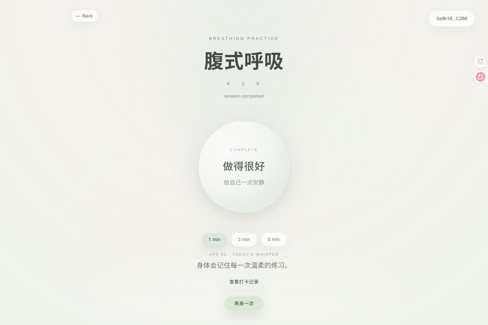
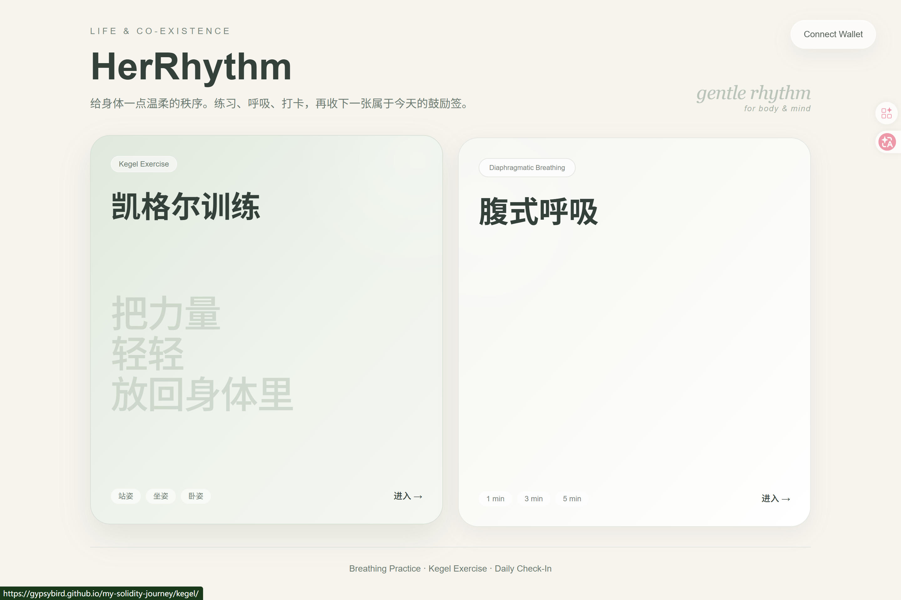
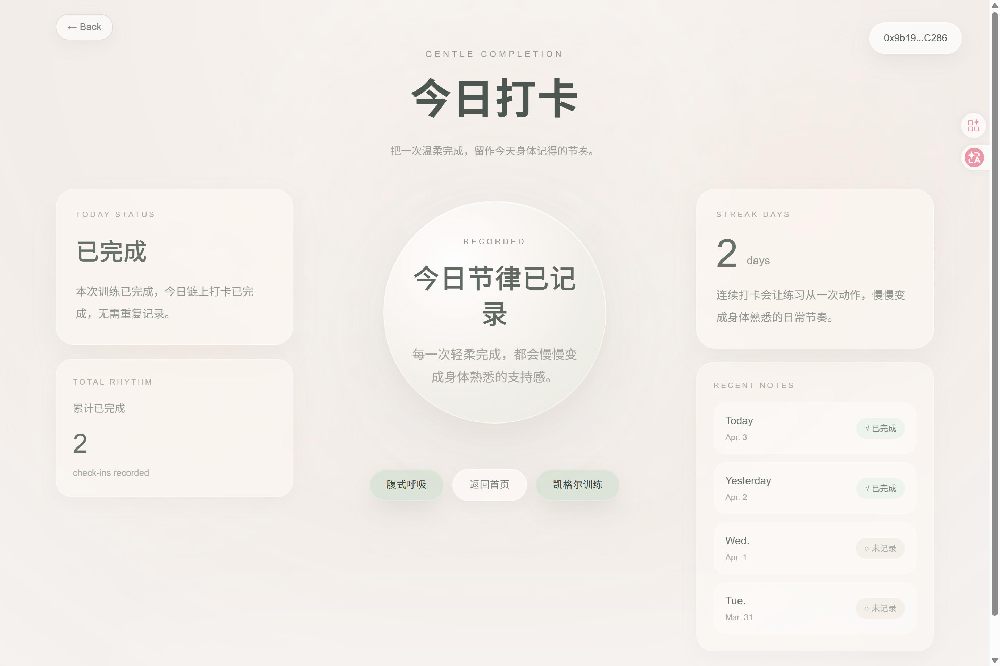

Life & Co-Existence
HerRhythm
A gentle Web3 ritual for women
Through breathing practice, Kegel exercise, and daily on-chain check-ins, HerRhythm helps women return to their bodies, their pace, and their own rhythm.
通过腹式呼吸、凯格尔训练与每日链上打卡，帮助女性在疲惫、压力与情绪负荷之中， 回到自己的身体、节奏与内在韵律。
Breathing Practice · Kegel Exercise · Daily Check-In
Return to your body, your pace, your rhythm.



Why HerRhythm
Many women live in a constant state of looking outward — responding to work, relationships, family, and expectations.
很多女性长期活在一种向外回应的状态里。我们照顾工作、关系、家庭与他人的期待， 却越来越容易忽略自己的身体、疲惫与情绪。HerRhythm 想提供一个很小但真实的入口， 让女性重新回到自己身上。
Self-care
自我照顾
Not as duty, but as presence.Body awareness
身体觉察
Reconnect with your body softly.Gentle continuity
温柔持续
Small acts of care, sustained in time.Core Experience
Three simple moments of care: breathe, strengthen, and check in.
Breathing Practice
腹式呼吸
A guided 4·2·6 breathing rhythm for calm, grounding, and return.Kegel Exercise
凯格尔训练
A softer and more intimate body practice for awareness and support.Daily Check-In
每日打卡
Turn small acts of care into a visible and lasting daily rhythm.How It Works
01
Enter HerRhythm
进入 HerRhythm，从一个温柔、安静的入口开始。02
Choose a Practice
根据当下状态，选择呼吸练习或凯格尔训练。03
Complete the Session
完成一次轻量但真实的身心照顾。04
Check In On-chain
留下今天这份努力的温柔记录。Why Web3
HerRhythm is not on-chain just because it is a Web3 project. It is on-chain because small acts of self-care deserve to be seen, remembered, and preserved.
HerRhythm 选择上链，不是为了给健康产品强行套上 Web3 外壳， 而是希望那些微小却真实的自我照顾，被记录、被看见、被保留。
Ownership
记录归属
Your check-ins belong to you.Continuity
持续性
Small acts of care are not lost over time.Visibility
被看见
What is gentle can still be real and meaningful.Return to your body, your pace, your rhythm.
HerRhythm 想做的，不是另一个逼人坚持的效率工具，而是一个帮助女性重新回到自己身体、 并把自我照顾变成可见、个人化、可延续记录的温柔入口。